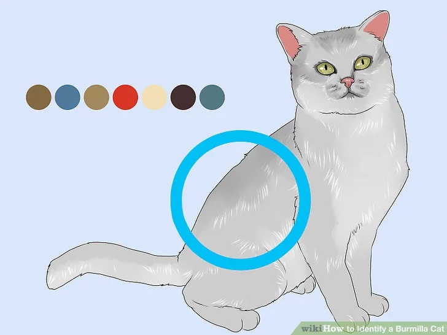
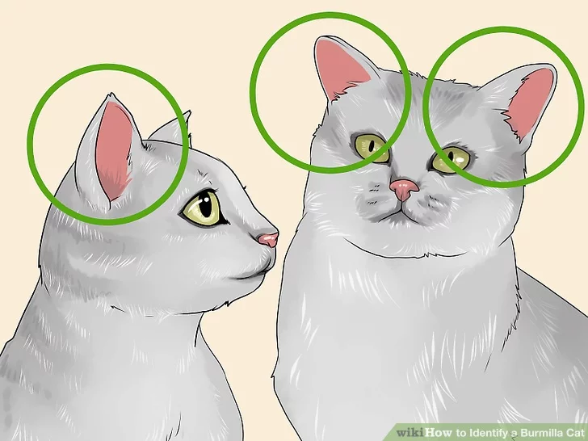

How to Identify a Burmilla Cat
Identifying a Burmilla cat is best done by looking carefully at the cat’s markings and physical features. The cat’s fur, for instance, is thick and dense, and its ears are broad at the base and tilt forward slightly. Certain behaviors – like being affectionate, adventurous, and extroverts – might also tip you off that you’ve got a Burmilla cat on your hands. Alternately, you might take your cat to get a DNA test to confirm with greater accuracy whether the cat is a Burmilla.
LifeSpan
Up to 17 years
Grooming and care
Tiffanies longer coats undergo two moulting seasons a year - following summer and winter. Brushing several times a week is required.
Health Concerns
Since Australian Tiffanies are a relatively new breed, they are likely to be healthier than other pure bred cats. Polycystic Kidney Disease (PKD) is often seen in Chinchillas but Australian breeding standards deem that Tiffanies must test negative to this.